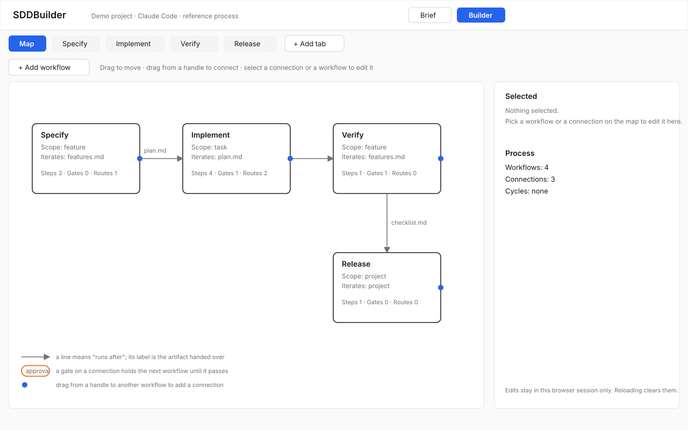

Desktop layout, 1280 px. Wireframe only: colours and wording are placeholders. Read screens.md for the criteria shown and the open points.
The reference process on the map, nothing selected. Lines carry the artifact they hand over; the legend explains gates and drag handles.
